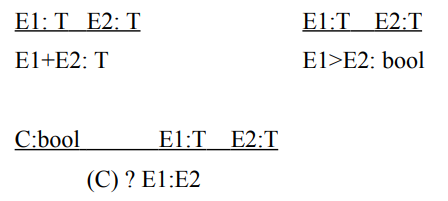

Previous Exams (2010, 2011, 2016, 2017, 2018)
True / False
Spring 2010
- LR parsing produces a rightmost derivation.
- Interfaces (as in Java) specify a dispatch vector layout.
- An SLR grammar can not be ambiguous.
- It is possible to write a regular expression for the language of regular expressions.
- The execution cost of a load instruction is always the same.
- A sound type system may reject a type-safe program.
- The x86 assembler takes 3-address code as input.
- Reaching definitions is a backward analysis.
- Adding lookahead symbols increases the size of the corresponding parsing table.
- The handle of a right-sentential form is also called a viable prefix.
- Reduce/reduce conflicts can commonly be resolved by adding precedence rules to the parsing scheme.
- Strong type checking depends on a static type system.
- In a control flow graph, the condition of a loop dominates its body.
- It is possible to write a context-free grammar for the language of context-free grammars.
- Every pair of elements in a partial order must be comparable by the ordering relation.
- When a function returns, any values it allocated on heap are no longer valid.
- Left factoring a grammar reduces the number of lookahead symbols required to parse it predictively.
- When a recursive descent parser verifies any predicted terminal, it already knows which lexeme to expect.
- With short-circuit evaluation, binary boolean operators can translate into jumps.
- The set of languages recognizable by LALR(k) parsers is smaller than that of LR(k) parsers.
Spring 2011
- With a strongly typed language, type checking will recognize all type-safe programs
- A given language corresponds to a unique context-free grammar
- LALR(k) parsing can give smaller tables than LR(k)
- The meet-over-paths solution to a set of dataflow equations is always at least as precise as the maximal fixed point solution
- Variables which are connected in an interference graph can share a register
- Every deterministic finite automaton is also a nondeterministic finite automaton
- Several different lexemes can correspond to the same token
- Moving loop-invariant code to a loop preheader alters the semantics of the program
- Grammars with left-recursive productions are not LL(k) parseable for any value of k
- At the last control flow point before a return statement, no more than 1 variable may be live
Spring 2016
- All regular languages can be specified by a context-free grammar
- Left-recursive productions make a grammar ambiguous
- A top-down parser can insert the last node in a syntax tree before it has read the entire source program
- LALR(0) parsing admits a greater class of grammars than LR(1) parsing
- A program which is accepted by a compiler can not contain any semantic errors
- A statically typed programming language admits only type-safe programs
- Any C function call with loop-invariant arguments is also loop-invariant
- Loop unrolling increases the size of the generated code
- The value of a live variable must be stored in a register
- A for loop header dominates every statement in the loop body
Spring 2017
- All finite languages are regular languages
- Any grammar can be left factored to reduce its lookahead requirement
- A static type system can only permit type-safe programs
- In order to translate a program into TAC representation, variables must be assigned to CPU registers
- L-attributed definitions admit synthesized attributes
- The LALR(1) parsing table of a grammar has at most the same number of states as the LR(1) table for the same grammar.
- DAG representation of an expression determines exactly one instruction tiling
- Common subexpression elimination reduces program size, but does not affect run time.
- Two different regular expressions can not match the same language
- An interference graph connects variables which are simultaneously live
Spring 2018
- Leftmost and rightmost derivations always correspond to the same syntax tree when the grammar is unambiguous
- No left-recursive grammar is LR-parseable
- LL(1) parsers need both a nonterminal and a terminal symbol to select a production
- Function inlining may increase program size
- The subset construction of a DFA from a NFA always results in a DFA with a minimal number of states
- In a syntax-directed definition, S-attribution allows inherited attributes
- Every operation in a three-address code (TAC) representation must have exactly three operands
- The maximal fixed point (MFP) solution to a data flow equation is at least as precise as the Meet-Over-Paths (MOP) solution
- Several basic blocks can have the same immediate dominator
- Compiled languages can not feature dynamic type checking
Topics
Lexical analysis (lanuages and automata)
2016
An image file in PPM format contains an ASCII text header, followed by a block of binary data. The header is specified to contain, in sequence: "P6" (A width*) "W" "H" (A height*) "M" (A maximal color value*) *formatted as a decimal number in plain text.
These 7 elements are all separated by arbitrary strings of whitespace, consisting of space, newline, and tabulator characters. The data block contains a sequence of (height * width) triplets of data elements, which are 8-bit values if the maximal color value is 255 or less, and 16-bit values otherwise.
- Draw a deterministic finite automaton which accepts the header format.
- Can PPM files be validated by matching them against a regular expression? Justify your answer.
2017
- Write a regular expression for the language consisting of the three words “lower”, “slower” and “shallow”
- Draw a corresponding DFA
- Can the number of states in your DFA be reduced? Justify your answer
- Write a context-free grammar for the specified header format: Files in the NIST matrix exchange format begin with a header of 3 words from 3 sets, which are (in order) {coordinate, array}, {real, integer, complex, pattern}, and {general, symmetric, skew-symmetric, Hermitian}. If the last word is 'Hermitian', the 2nd word must be 'complex'. If the 2nd word is 'pattern', the 1st word must be 'coordinate', and the 3rd must be either 'general' or 'symmetric'.
- Can this header be recognized by a regular expression? Why/why not?
2018
The following lexical definition describes integer constants in the 1989 ANSI C standard: "An integer constant consisting of a sequence of digits is taken to be octal if it begins with 0 (digit zero), decimal otherwise. Octal constants do not contain the digits 8 or 9. A sequence of digits preceded by 0x [or] 0X (digit zero) is taken to be a hexadecimal integer. The hexadecimal digits include a or A through f or F with values 10 through 15. An integer constant may be suffixed by the letter u or U, to specify that it is unsigned. It may also be suffixed by the letter l or L, to specify that it is long."
For brevity, assume that the letters {x, a-f, u, l} are case-insensitive, and let ' ? ' denote zero-or-one selection in regular expressions. Note that the optional suffix letters 'l' and 'u' may appear in any combination and order.
- Write three regular expressions that match octal, hexadecimal, and decimal integer constants, respectively.
- Draw a DFA that matches all three types of integer constants.
Syntax analysis
2010
S → XxXy | YyYx
X → ε
Y → ε
- Show the LL(1) parsing table
- Write out the steps in a top-down parse of the input 'xy', showing remaining input, and the state of the parse stack for each step
- Write out the steps in a bottom-up parse of the input 'xy', showing remaining input, state of the parse stack, and the action taken for each step
2011
S → s C T | s C T w B
C → c
T → t | ε
B → B a | a
- Rewrite this grammar for LL(1) parsing, by left factoring it and eliminating left recursion
- Tabulate the FIRST and FOLLOW sets of the nonterminals in the resulting grammar, and construct the predictive parsing table
- By default, yacc resolves shift/reduce conflicts by shifting. Briefly explain the consequence of resolving these by reducing instead, using the dangling-else ambiguity as an example
2016
B → b D L e
D → v V | ε
V → i | V i
L → S | L S
S → B | s
The grammar fragment above abstracts VSL blocks which contain an optional list of declarations, and a list of one or more statements, where a statement may be a nested block.
- Rewrite the grammar so that it is LL(1)
- Tabulate the FIRST and FOLLOW sets of the nonterminals in the resulting grammar
- Construct the predictive parsing table
2017
-
Ignoring whitespace and using single characters as terminals, write a context-free grammar for the language of comma-separated lists of integers, where each integer has an optional ‘-’ prefix, and no integer begins with ‘0’.
-
Is your grammar from the previous task LL(1)? Justify your answer.
-
Given the following grammar for comma-separated lists of items, Draw its LR(0) automaton:
S → L L → L , I L → I I → i -
Identify any shift/reduce conflict, and show the corresponding SLR parsing table.
2018
-
Adapt the following grammar for LL(1) parsing, by left factoring it
L -> S | S ; L S -> f V i W L e | s V -> v W -> V | V : W -
Tabulate the FIRST and FOLLOW sets of each nonterminal in the resulting grammar
-
Construct its LL(1) parsing table
-
Consider the following grammar where i denotes a digit from 0 through 9.
E → E + E E → E * E E → iDraw the LR(0) automaton, and identify all shift/reduce conflicts
-
Can the ambiguity in this grammar be resolved by SLR parsing? Justify your answer.
-
The grammar abstracts a fragment of the arithmetic rules in VSL. How can its ambiguity be resolved using the YACC parser generator?
Intermediate representation
2016
- Some languages feature a WHERE construct, which applies operations to arrays only where the elements meet a condition, e.g. if 'a' is the array
[1,2,3,4], the statementWHERE ( a < 3 ) a = a * 5will result in the array[5,10,3,4]. Outline a procedure to translate the control flow of WHERE statements into three-address code, using the above statement as an example
Data flow analysis
2011
Consider the following program fragment
x = 7
if ( a ) {
x = 8
if ( b ) {
x = 9
}
}
y = 2 * x
- Draw its control flow graph
- Label the blocks, and draw the dominator tree
- Number the appropriate statements, and label the graph with corresponding in, out, gen and kill sets for reaching definitions analysis. (Block level is sufficient, it is not necessary to show the control points before and after every statement.)
- What is the significance of having a monotonic transfer function?
- What is the significance of having a distributive transfer function?
2016
Consider the following program fragment:
if ( a ) {
w = 4;
x = 3;
y = 3;
if ( b ) {
w = 2;
x = 2;
y = 9;
}
} else {
w = 2;
x = 6;
y = 3;
}
z = w * x * y;
- Draw its control flow graph
- Consider the dataflow equations of the constant propagation framework. What is the maximal fixed point (MFP) solution for z at the final program point in the graph?
- What is the meet-over-paths (MOP) solution for z at the same point?
- In your own words, briefly explain the condition under which MFP and MOP solutions are equal.
2017
-
Consider the following program fragment, Draw its control flow graph
q = 0 i = 0 do { i = getchar(); if ( i == EOF ) { q = 1; } } while ( q == 0 ); exit ( 0 ); -
The post-dominator relation and immediate post-dominator are defined as the dominator relation and immediate dominator respectively, when applied as a backward analysis. Write the post-dominator data flow equations for the control flow graph in the previous task, solve them, and show the corresponding post-dominator tree.
-
Are the Maximal Fixed Point and Meet-Over-Paths solutions equal for this analysis? Justify your answer.
-
Draw the control flow graph of an equivalent program where the loop condition dominates the loop body in a forward analysis.
2018
Consider the following program fragment:
d = 1
c = 2
b = 3
a = 4
loop:
c = a + b
d = a + c
b = c + d
a = b + d
if (a-b != 13) goto loop
exit
- Draw its control flow graph
- State and solve the data flow equations for Live Variable analysis. (Assume that no variables are live after exit.)
- An interference graph is an undirected graph containing a node for each variable, and connecting edges between nodes which correspond to variables that are live simultaneously. Draw the interference graph for your result from 2..
Run time environments
2010
- Draw the layout of a process image at run time, labelling each part
- Draw the layout of an activation record, labelling each part
2016
- At the instruction level, describe the steps take to execute a function call in a stack-based machine, and relate them to the layout of an activation record
Optimizations
2011
In C, sqrt is an external library function, whereas in FORTRAN, it is an intrinsic operation defined by the language. Briefly explain which difference this makes to an optimizing compiler when analyzing a loop like the following one
x = 2.0
for ( i = 0; i < N; i++ ) {
a[i] = b[i] * sqrt(x)
}
2018
Consider the following program fragment
for ( i = 0; i < M; i++ ) {
for ( j = 0; j < N; j++ ) {
C[i][j] = 0.0;
for ( k = 0; k < N; k++ ) {
C[i][j] += A[i][k] * B[k][j];
}
}
}
- Assume that N is an even number, and rewrite the innermost, k-indexed loop when it is unrolled by a factor 2.
- Briefly explain the purpose and effect of strength reduction
- Explain why constant folding and propagation may be usefully applied several times to a given program.
Miscellaneous
2010
Short Answers
- Briefly explain the distinction between L-attributed and S-attributed syntax-directed definitions
- Under what condition is the maximal fixed point solution to a dataflow problem identical to the meet-over-paths solution?
- How is the ε-closure of an NFA state defined?
- Can a language with pointer arithmetic feature automatic garbage collection? Justify your answer
- State two advantages obtained by function inlining
- How can register assignment benefit from live variable analysis?
- Most programs exhibit some degree of spatial and temporal locality. Explain what these two terms refer to, and how they may be exploited for efficient execution
- LL(k) parsing can be extended to an unbounded amount of lookahead by allowing the parser to decide the choice of production based on testing the remaining token stream against a finite set of regular languages. Does this resolve the problem with left-recursion? Explain
- Explain the cause and effect of heap memory fragmentation
- Identify the loop-invariant code in the following program fragment, and explain the benefit of moving it
double s[180], pi = M_PI;
for ( int d = 0; d < 180; d++ ) {
s[d] = sin ( d * pi / 180.0 );
}
Global variables
Briefly describe which changes you would make to your compiler from the TDT4205 problem sets, in order to extend VSL with global variables
2011
Relations and Hasse diagram
- Define a relation for ordered pairs of integers { (a,b), (c,d) }, such that (a_b) < (c_d)
- Draw a Hasse diagram for the order this imposes on the set of pairs { (0,0), (1,0), (0,1), (1,1), (1,2), (2,1), (2,2) }
- Mark the greatest lower bound for (1,2) and (2,1).
- Does this pair of set and ordering relation form a lattice? Justify your answer.
Proof tree

and the premises that 2:int and 3.14:float, show a proof tree with judgements on the types of x and y in the statement: